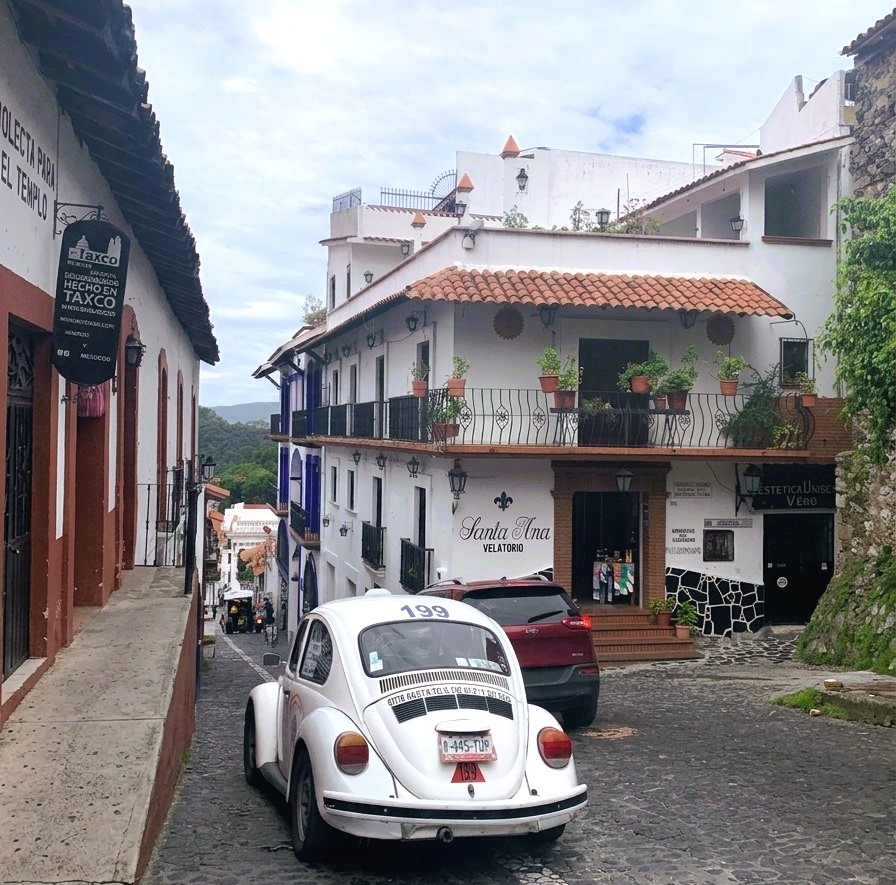
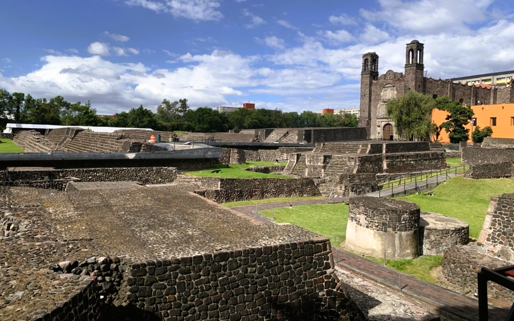
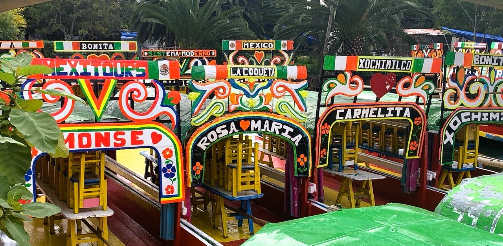

Basílica de Santa María de Guadalupe
Es uno de los santuarios católicos más visitados del mundo, dedicado a la Virgen de Guadalupe. Construida entre 1974 y 1976 por el arquitecto Pedro Ramírez Vázquez.
Explora los rincones donde la historia cobra vida
Es uno de los santuarios católicos más visitados del mundo, dedicado a la Virgen de Guadalupe. Construida entre 1974 y 1976 por el arquitecto Pedro Ramírez Vázquez.

Taxco es reconocido por su arquitectura colonial con calles serpenteantes de cantera y por ser un centro histoórico importante en México.
Tradicionales Vochos que sirven como taxis tradicionales en esta localidad

La ciudad de la plata, con sus calles empedradas y casas blancas.

Ubicado en la calle Dolores en Ciudad de México
Dato: Es considerado uno de los barrios chinos más pequeños del mundo, establecido formalmente en la década de 1960.

También conocido como el Monumento a los Niños Héroes
Esta ubicado en el Bosque de Chapultepec. Fue construido entre 1947 y 1952 para honrar a los cadetes militares que murieron defendiendo al castillo de Chapultepec, durante la intervención estadounidense en 1847.

Es una de las catedrales más antiguas de México, construida en el siglo XVI por los franciscanos.
Dato: Forma parte del conjunto conventual que fue declarado Patrimonio de la Humanidad por la UNESCO.

Son un destacado conjunto arqueológico prehispánico.

Son un destacado conjunto arqueológico prehispánico.

Es el parque de atracciones más grande de América Latina.

Es un lugar emblemático donde convergen tres épocashistóricas distintas:
La Prehispánica, La Colonial, Moderna.

Ubicado en la Basilica de Guadalupe, se encuentra este hermoso altar, donde los peregrinos pueden tomarse fotografias.

En los canales de Xochimilco, se encuentra este pequeño Zoologico, en el cual pueden interactuar con algunos animales y conocer mas sobre las especies nativas.

Trajineras coloridas, estas embarcaciones tradicionales son un símbolo icónico de la cultura mexicana.